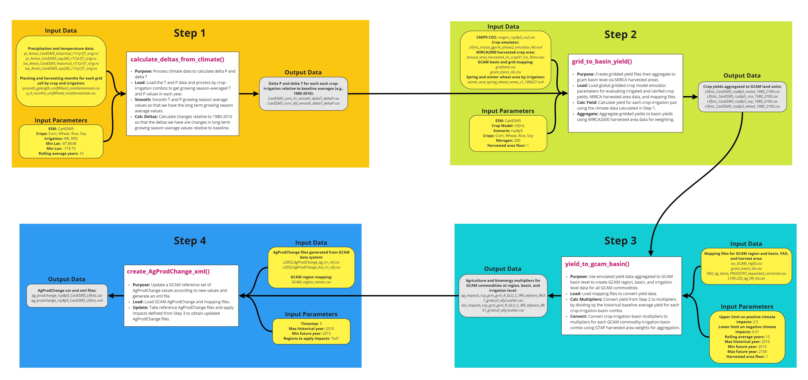

Introduction

Introduction to Osiris. Describe overall concept and purpose then list the four steps n bullets with breif descriptions of each.
Workflow Summary
Workflow Details

Install
- Download and install:
- R (https://www.r-project.org/)
- R studio (https://www.rstudio.com/) (Optional)
- In R or R studio:
install.packages("devtools")
devtools::install_github("JGCRI/osiris")Additional steps for UBUNTU from a terminal
sudo add-apt-repository ppa:ubuntugis/ppa
sudo apt-get update
sudo apt-get install -y libcurl4-openssl-dev libssl-dev libxml2-dev libudunits2-dev libavfilter-dev libmagick++-devAdditional steps for MACOSX from a terminal
brew install pkg-configStep 1
Description here with reference to figure, table and script below. All exogenous inputs should have sources and doi’s.

Example Script
library(osiris)
# Step 1: calculate_deltas_from_climate
osiris::calculate_deltas_from_climate(
climate_dir = paste0(data_folder,"/climate_data"),
write_dir = paste0(data_folder,"/outputs_calculate_delta_from_climate"),
monthly_growing_season = paste0(data_folder,"/growing_seasons/pmonth_gslength_unifWheat_smallareamask.csv"),
monthly_harvest_season = paste0(data_folder,"/growing_seasons/p_h_months_unifWheat_smallareamask.csv"),
growing_season_dir = paste0(data_folder,"/growing_season_climate_data"),
esm_name = 'CanESM5',
crops = c("Corn", "Wheat", "Rice", "Soy"),
irrigation_rainfed = c("IRR", "RFD"),
minlat = -87.8638,
minlon = -179.75,
rollingAvgYears = 15
)Step 2
Description here with reference to figure, table and script below. All exogenous inputs should have sources and doi’s.

Example Script
library(osiris)
# Step 2: grid_to_basin_yield
osiris::grid_to_basin_yield(
carbon = paste0(data_folder,"/yield_response_inputs/magicc_rcp8p5_co2.csv"),
weight_floor_ha = 1,
emulator_dir = paste0(data_folder,"/yield_response_fcns/ggcmi_phase2"),
input_dir = paste0(data_folder,"/outputs_calculate_delta_from_climate"),
area_dir = paste0(data_folder,"/area_data"),
basin_grid = paste0(data_folder,"/mapping_data/gridData.csv"),
basin_id = paste0(data_folder,"/mapping_data/gcam_basin_ids.csv"),
write_dir = paste0(data_folder,"/outputs_grid_to_basin_yield"),
wheat_area = paste0(data_folder,"/winter_and_spring_wheat_areas_v1_180627.nc4"),
crops = c("maize", "rice", "soy", "wheat"),
esm_name = 'CanESM5',
cm_name = 'LPJmL',
scn_name = 'rcp8p5',
N = 200
)Step 3
Description here with reference to figure, table and script below. All exogenous inputs should have sources and doi’s.

Example Script
library(osiris)
# Step 3: yield_to_gcam_basin
osiris::yield_to_gcam_basin(
write_dir = paste0(data_folder,"/outputs_yield_to_gcam_basin"),
emulated_basin_yield_dir = paste0(data_folder,"/outputs_grid_to_basin_yield"),
iso_GCAM_region_mapping = paste0(data_folder,"/mapping_data/iso_GCAM_regID.csv"),
FAO_ag_mapping = paste0(data_folder,"/mapping_data/FAO_ag_items_PRODSTAT_expanded_corrected.csv"),
iso_harvest_area_mapping = paste0(data_folder,"/mapping_data/L100.LDS_ag_HA_ha.csv"),
iso_GCAM_basin_mapping = paste0(data_folder,"/mapping_data/gcam_basin_ids.csv"),
max_CCImult = 2.5,
min_CCImult = 0.01,
weight_floor_ha = 1,
rolling_avg_years = 15,
maxHistYear = 2010,
minFutYear = 2015,
maxFutYear = 2100
)Step 4
Description here with reference to figure, table and script below. All exogenous inputs should have sources and doi’s.

Example Script
library(osiris)
# Step 4: create_AgProdChange_xml
osiris::create_AgProdChange_xml(
write_dir = paste0(data_folder,"/outputs_create_AgProdChange_xml"),
ag_irr_ref = paste0(data_folder,"/reference_agprodchange/L2052.AgProdChange_ag_irr_ref.csv"),
bio_irr_ref = paste0(data_folder,"/reference_agprodchange/L2052.AgProdChange_bio_irr_ref.csv"),
ag_impacts = paste0(data_folder,"/outputs_yield_to_gcam_basin/ag_impacts_rcp_gcm_gcm_R_GLU_C_IRR_allyears_RA31_gridcull_allyroutlier.csv"),
bio_impacts = paste0(data_folder,"/outputs_yield_to_gcam_basin/bio_impacts_rcp_gcm_gcm_R_GLU_C_IRR_allyears_RA31_gridcull_allyroutlier.csv"),
GCAM_region_mapping = paste0(data_folder,"/mapping_data/GCAM_region_names.csv"),
timestep = 5,
maxHistYear = 2010,
minFutYear = 2015,
appliedto = "full"
)